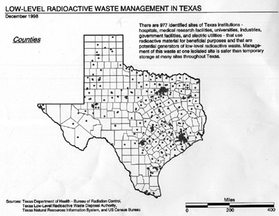
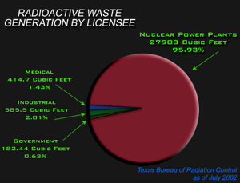
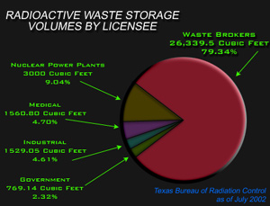
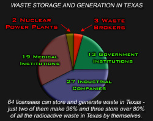
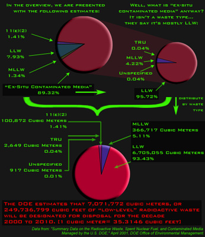
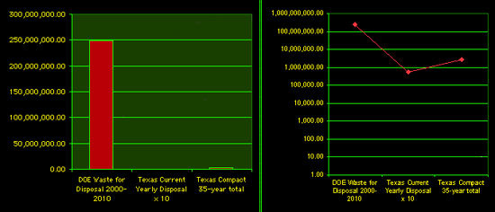
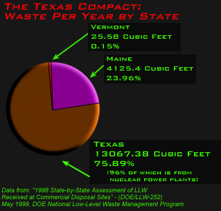

Texas Waste: No Need For A Radioactive Waste Dump
Number of Texas Waste-Storing Sites Overstated
Although many news articles and other sources have stated
in the past that there are 1,200 entities in Texas generating
radioactive waste, a source for this number does not exist.
The Morris News Service reported, "Currently, low-level
radioactive waste from Texas hospitals and research facilities is
held in more than 1,200 temporary storage facilities across
the state." The figure of 1,200 sites is even listed on the
Texas Senate web site. As of January 2002 the Texas Bureau
of Radiation Control (BRC) reported only 1,512 active
licensees for the use of radioactive materials - the implication
was that 80% of licensees were
storing waste on site. Such declarations made it appear as though low level
waste was lying around in infrequently
inspected and potentially dangerous
storage units. No one contacted at
the Texas Department of Health Bureau
of Radiation Control would claim any
knowledge of the number's source,
despite its frequent use in the press and
political debate.
As it turns out, as of January 2002
according to the BRC, only 53
Texas sites stored any radioactive waste
on site in the year before their last
inspection. Only 15 licensed medical
sites reported any waste stored on-site,
and another 10 university and government
research institutions reported
storing waste on-site. That's a far cry from the "hundreds"
of medical and research facilities
reported in the press.
The truth, according to the state agency that licenses and
regulates radioactive materials and storage, is that:
• In total, there are only 53 sites that actually store
nuclear waste in the state.
(23 industrial, 10 government, 15 medical, 2 nuclear power plants,
and 3 waste brokers)
• Only 46 sites in Texas actually generate low
level radioactive waste;
• Of these sites, 96.1% of low level waste comes
from 2 generators, the Comanche Peak and South Texas nuclear power plants.
• Medical waste constitutes just 1.4% of
waste generated in Texas;
• Industrial, medical, and academic sources combined
account for just 3.9% of annual
waste generated;
• In total, that waste would fit into a storage
facility the size of a one-car garage.
[Broker-handled waste is not included
here because this waste is either imported from out of state for
processing or would result in double counting waste from other
Texas generators. Even including the broker waste, nuclear plants
make up 81.5% of Texas generated waste.]

Waste dump promoters used this map of 977 "potential" sources of waste to generate
concern that Texas may be victim to unknown hazards from poorly controlled low level
waste all across the state.
|
Medical and Academic Waste Poses No Significant Problem
While legislative debates have centered on medical and academic waste,
the numbers shows those sources do not pose a
significant problem. Most use isotopes with relatively low half
lives and generate little waste. Out of several hundred medical
facilities licensed to use radioactive
materials, only 15 store waste on-site.
Commonly used sealed-sources that contain cesium-137 and
cobalt-60 are always
shipped back to the manufacturer for disposal, and do
not enter hospital waste systems.
Waste handling practices of medical generators often allows waste to decay on-site
prior to disposal in a landfill, since only radioactive for hours or days.
Smaller amounts of waste with larger halflives
are shipped offsite for disposal when necessary. "We don't have
a large amount of [low level waste] on-site," said Jody Spence, Radiation Safety Officer
at Southwestern Medical Center. "We don't ship that
often." Two UT medical centers store the largest quantities of medical waste.
Medical research uses
small amounts of long-lived radioisotopes such as tritium and
carbon-14 that require off-site disposal.
In the case of UT System, this material sent for interim storage at
Fort Stockton. Medical
technology is beginning to replace long-lived radioactive
sources with shorter-lived elements with increasing frequency.
Most medical waste producers
generate small amounts of waste, and the hospitals don't regularly need
to transport waste off-site. "Most stuff
is gone in a few days," said Dr. Paul Murphy. "It's stored in
haz-waste containers or drums in special locked facilities.
Then it's rotated out of the storage area" after it has decayed.
"There's really no danger." Dr. Murphy is RSO at St. Luke's
Episcopal Hospital in Houston.
A lot of medical and other very low-level waste is simply
washed down designated sinks into the sanitary sewers. BRC
regulations do not allow "disposal of radioisotopes into a septic
tank/drain field system," so "radioactive liquids cannot be
poured down the drains at any facilities where they do not feed
into a public sewer system." BRC regulations limit the
total annual concentrations of any radioactive
material washed down the sewer per licensee.
At UT-Austin, for example, "total [radioactive] liquids released
into the sanitary sewer under The
University's Radioactive Materials License
cannot exceed one Curie per year." Other waste - if its half-life is less than
300 days - may be legally disposed of at a
Type 1 municipal landfill. These may
include various solid wastes such as gloves,
pipes, centrifuge tubes, plastic items, needles
and razor blades, biological solids, stock vials
and animal carcasses.
Medical waste makes up a very small
amount of total waste generated in Texas -
just 1.6% of all waste generated, according to the BRC.
For medical licensees the BRC
Regulatory Guide envisions that most
waste is "intended for routine disposal
into the sanitary sewage system," and
requires only that a specific sink be
designated for this use. A handful of
facilities have received prior approval
to store waste on site until it decays, or
to dispose of it in a landfill if it has a
half life of less than 300 days.
Industrial Waste in Storage
Just 23 industrial facilities store waste. The
site with by far the most waste in
storage in January was Gulf Nuclear of Louisiana's
Houston facility - which was abandoned under bankruptcy
and now is under the care of the federal EPA for cleanup.
Excluding Gulf Nuclear, industrial radioactive waste
amounts to just 1.7% of annual
waste generated, and 4.1% percent of all waste stored in
Texas.
For example, Thermo
Measuretech, formerly TN Technologies
in Round Rock, manufactures moisture
density gauges and other measurement devices
that use small, sealed-source capsules containing Cesium
137. The company's customers return the devices when
they are finished using them. Thermo Measuretech
evaluates capsules for re-use and disposes the spent ones
off-site. The company shipped 180 cubic feet of radioac-
tive material off-site in the year before its last inspection.
This amount, though, was anomalous. The company had
been storing waste on-site for eight years before shipping a
large amount at once to the Barnwell dump on South
Carolina. According to radiation safety officer Robert
Burkhart, 180 cubic feet of waste is far more than the
company's average annual waste generation.
Radioactive material is either discharged into the waste system
using approved methods, or stored until enough material is available to merit a
shipment.
Other industrial users need only
store radioactive materials for a short period of time. At Baker
Hughes/Western Atlas Logging Services, "Temporary waste ...
[is] stored until it has decayed to an allowable level" (minimum
10 half lives) for disposal. That firm reported a total 90 cubic
feet of waste in storage at the time of its last inspection, but
only 15 cubic feet of waste transported off-site in the previous
year. Radioactive sources lost in oil and gas wells that cannot
be "fished" out are abandoned in the well, which is then
plugged with cement and the wellhead covered with a brass or
stainless steel plaque. Otherwise, the small amounts reported by the total 17
industrial generators support the notion that industrial users as a class don't have
very large waste-handling needs.
Lost, Stolen or Abandoned Items
With more than 30,000 sealed, low level radioactive
sources in Texas under the control of 1,512 active licensees,
occasionally these sources are inadvertently lost or stolen in
the course of doing business. In the past, proponents of a Texas low-level waste dump
have latched on to events involving lost, stolen or abandoned
items to argue that a Texas dump would prevent these mishaps.
Since the 9-11 catastrophe, additional concerns have been
raised that low-level sources might be combined with conventional
explosives to create a "dirty bomb." In this context, it's
worth taking a second look at the problem of lost or stolen
radioactive items in Texas.
On average, 17-18 radioactive source materials are lost,
stolen or abandoned each year in Texas, totaling 123 items in
the years 1995-2001. Of those, 45 percent are moisture
density gauges - a tool
that measures the density of the
substructure upon which a building contractor pours a house
slab. Another 12 percent were radioactive sources related to
industrial radiography (each containing only 8-10 millicuries of
cesium-137). Of the 123 items, 72 were lost or
abandoned, and 51 were stolen. Potential health effects related
to nearly all of these items are "inconsequential," according to
BRC, because the level of radioactivity involved is "so
small."
Most lost, stolen or abandoned items belong to industrial,
governmental or medical licensees not licensed to store
radioactive waste. Instead, most of the items are of the type
that would be sent back to the manufacturer or disposed of
down a designated sink into the sanitary sewer. The most hazardous
radioactive materials that
have been lost or stolen
are industrial radiography-
related sources. A total of
9 have been lost or stolen in the last 7 years, with 6 of them
recovered.
According to the BRC "Regulatory
Guide" for industrial licensees, "waste
disposal [for sealed sources] can usually
be accomplished by returning all
depleted sources to the manufacturer.
The rules also allow radioactive
material contained in radiographic devices
(the depleted uranium shielding) to be
disposed of by transfer to an authorized
recipient. Authorized
recipients include the original
supplier" and licensed waste
handlers.
If the manufacturer had gone out of business (or underwent bankruptcy) and was
not available to accept the source, regulators have been able to
identify other manufacturers willing to
take over recycling of their old competitors' product lines. Occasionally,
either the state or an "innocent finder" paid for
disposal when no payer was available.
There is a national program to help states deal with such
"orphaned" sealed sources, but Texas does not currently
participate. The federal government in 2001 began financing
through the Conference of Radiation Control Program Directors
a new program called the National Orphan Radioactive
Material Disposition Program. It was established to financially
assist and provide technical guidance to state radiation control
programs in the disposition of discrete orphan radioactive
material.
Implications of a Texas Dump
It becomes clear that with the exception of
Texas' two nuclear power plants, the state does not generate enough
low level radioactive waste to justify licensing a commercial
Texas dump. Far from having waste stored at 1,200 sites
around the state, only 53 sites presently store radioactive waste
of any kind or quantity. And most of that waste decays very
quickly, and would not be sent to a low level dump in any
event. Overall, just 3.9 percent of waste generated statewide
comes from sources besides the "Big 2" nuclear power plants -
i.e., from government, medical, academic, and industrial
facilities.
The Big 2 nuclear reactors and brokers already contract
for waste disposal with existing dumps and require no new
dumping permits for their current operations.
Indeed, WCS officials publicly acknowledge that their dump
is not economically feasible with compact waste alone because of
a lack of volume. Examining Texas figures for waste storage and
disposal make clear why. Texas' annual waste generation from all
sources other than the Big 2 would barely fill a small garage.
That's why WCS wants unrestricted authorization for the site to
dispose of more potent nuclear reactor and military waste from
the US Department of Energy.
The economics of Texas' low-level radioactive waste market
are clear: Texas' 46 waste generators do not produce sufficient
waste to justify a Texas-only dump, or even a dump that
accepts waste from the failing Maine-Vermont Compact. A
new dump might benefit Texas' two nuclear power plant
owners, and of course, the operators of the dump (provided
they are authorized to accept national waste). But there is
insufficient demand in Texas to justify a dump, and there are
clear and compelling reasons why the State should not accept
waste from outside the state for burial in Texas.
Revisiting the Study's Numbers, Very Little Changes
The Sierra Club report was based upon the LLW status as
listed by the BRC in January of 2002. In July, the data was revisited, and
very little had changed.
A few licenses were added and dropped, but no significant change had occured.
This remains true as of December of 2002.
Waste brokers have again been omitted from Texas generator count, as has
Gulf Nuclear which has become a federal affair, (GNI's sites were declared cleaned
up in December, the waste sent to Barnwell).
Nuclear power plants still account for about 96%
of the radioactive waste generated in Texas.
Note again that 80% of the waste stored
in Texas is brought in from outside of Texas by waste brokers WCS and NSSI.
Out of 62 licensees, 8 had none stored, and 16 generate none annually.
(46 generate waste annually, and 54 store waste on-site)

Cubic Feet Generated Annually
| Waste Brokers: | 27507.50 Cu Ft |
| Gov't Institution: | 182.44 |
| Industrial: | 585.50 |
| Medical: | 414.70 |
| Nuclear Power: | 27903.00 |
| TOTAL: | 56593.14 Cu Ft |
|
Cubic Feet in Storage
| Waste Brokers: | 26339.50 Cu Ft |
| Gov't Institution: | 769.14 |
| Industrial: | 1529.05 |
| Medical: | 1560.80 |
| Nuclear Power: | 3000.00 |
| TOTAL: | 33198.49 Cu Ft |
|

By January 2003, it became apparent that TXU, who manages Texas' nuclear power plants,
had finally read the Sierra Club's report. TXU restated it's yearly generation amounts
to the State of Texas, claiming that its volume reduction/ compaction shrinks the yearly
figure of 27,903 cubic feet of waste down to 5,088 cubic feet. Although we regard this claim
with cynicism, one can still point out with the new numbers that over 80% of all of the
radioactive waste generated in Texas originates at our nuclear power plants- however -the DOE
does not report this sortof volume reduction whatsoever in the State disposal numbers,
so we see very little wrong with saying it is still actually 96%. In fact, we encourage it.
Very little else changed prior to the 78th Legislature. Out of a total of 64 licenses, 45
generate waste and 52 store waste.
Cubic Feet Generated Annually
| Waste Brokers: | 27,508 Cu Ft |
| Gov't Institution: | 186.1 |
| Industrial: | 570.91 |
| Medical: | 433.83 |
| Nuclear Power: | 5088 |
| TOTAL: | 33,787 Cu Ft |
|
Cubic Feet in Storage
| Waste Brokers: | 26,340 Cu Ft |
| Gov't Institution: | 859.2 |
| Industrial: | 973 |
| Medical: | 1664.92 |
| Nuclear Power: | 3600.00 |
| TOTAL: | 33,437 Cu Ft |
|
Potential Waste Amounts from The Texas Compact
and the Department of Energy: A Clear Contrast
So, the Sierra Club's report gives us an idea of how much Texas waste there is and
its source. Now let's look at the potential volumes which would arrive
to be disposed in Texas from the DOE and the Texas Compact respectively.
Keep in mind that the Compact Commissioners may bring in waste from outside of
the Texas Compact whenever they decide to do so.
Calculating DOE Volumes of Waste
There are several sources from the DOE which give us an idea of how much waste
is estimated. Generally, the DOE asks its facilities to submit what they believe
will be generated, and asks that values be provided up to the year 2070.
The latest figures which the DOE provides are in the publication "Summary Data on the
Radioactive Waste, Spent Nuclear Fuel, and Contaminated
Media Managed by the U.S. DOE" submitted in April 2001 by the DOE Office of Environmental
Management. This update of the 1997 book of the same title demonstrates that the DOE
previously underestimated what their facilities would dispose of per year by several
multiples of the previous numbers (the amounts available at cid.em.doe.gov are labeled
as using the previous 1996 data).
For the purpose at hand of predicting activity at a proposed low-level waste dump,
what we need to figure out is how much waste is planned for disposal in it's first decade,
which is also incidentally the years where estimates are closer to the real-world amounts, so
this estimate is also the safest assumption to employ.
|  |
DOE Low Level Waste Disposal: 2000-2010
As illustrated here, the values we obtain are initially divided into the basic waste types,
[low-level, mixed low-level (a subcategory of LLW), 11e2 byproduct waste] and a category
called "ex-situ contaminated media", which is not a waste type and simply means contaminated
environmental substances. This ex-situ category is divided for us into formal waste types in a
later chapter of the book, so that we can distribute it by waste type with the rest of the
waste. The ex-situ category is actually misleading, as it suggests that LLW makes up a
small percentage of the waste.
When it is distributed by type, it shows us the true
percentages and volumes of waste by each type. Adding up LLW and Mixed LLW, the DOE
estimates that a total of 7,071,772.000 cubic meters, or 249,736,799.4712 cubic feet,
of LLW will be designated for disposal over the range of the fiscal years from 2000 to 2010.
[1 cubic meter= 35.3146 cubic feet]
|
DOE Waste Amounts To 441 TIMES What Texas Disposes Of
There is so much DOE "low-level" waste that in order to compare the
amounts with what is expected from the Texas Compact or Texas-only waste,
we have to use a logarithmic scale (Texas and Texas Compact volumes are so dwarfed they will not
register on a regular comparison bar chart). Current yearly amounts reported for
Texas are multiplied by 10 to represent one decade.
We can clearly see that the DOE amounts are
exponential- a whopping 92 times the 35-year total from the Texas Compact and
441 times the amount from Texas (10 year projection). The radioactive waste
dump at Sierra Blanca was to handle merely waste from the Compact- thus a DOE/Compact dump
which WCS seeks would be over 300 times larger than Sierra Blanca was planned to be!
[receiving DOE and Texas Compact waste for 35 years].
[DOE disposal 2000-2010= 249,736,799.47 Cubic Feet, Texas Compact member states disposal
over 35 years estimated (TCEQ) 2.7 million cubic feet;
Texas-only storage (TxBRC) per year x10= 565,930 Cubic Feet.]
|
|

|
|

|
How Much Waste Is From The Texas Compact?
The estimates which are available for the Texas Compact were released in 1998 by the
DOE National Low-Level Waste Management Program under the title
"1998 State-by-State Assessment of Low-Level Radioactive Wastes Received at
Commercial Disposal Sites - (DOE/LLW-252)." Looking at this data,
in conjunction with Texas generation data suplied by the Texas Bureau of Radiation Control,
it becomes clear that most of the waste in the Texas Compact comes from the two Texas power plants.
Now that Maine has dropped out of the compact, there is such a small percentage of waste
from Vermont that there is hardly any financial incentive for them to remain in the Compact.
Even without the $25 million fee Vermont would pay to participate in the Compact, it would
not be economical to ship the miniscule amount of waste across the country to Texas.
| State |
Vol (Ft3) |
Activity (Ci) |
| Maine | 4125.4 | 1066.91 |
| Texas | 13067.38 | 1887.28 |
| Vermont | 25.58 | 0.009 |
| TOTALS | 17218.36 | 2954.19 |
|
["Summary Data on the Radioactive Waste, Spent Nuclear Fuel, and
Contaminated
Media Managed by the U.S. DOE" April 2001; DOE Office of Environmental
Management. pg 2-6, pg 10-17]
[1998 State-by-State Assessment of Low-Level Radioactive Wastes Received at
Commercial Disposal Sites. DOE/LLW-252, DOE National Low-Level Waste Management Program.]